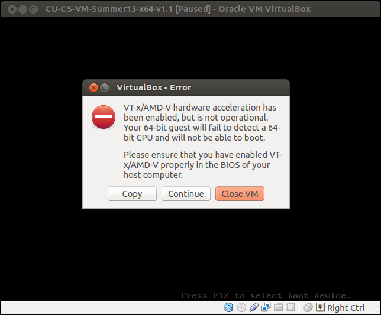

Having trouble with the VM? See the items below. You may also wish to consult the VM Tips page.
If you are using a computer on which the processor virtualization extensions (VT-x/AMD-V) have been disabled by default (or if you have manually disabled them), you will receive the following error message when booting any 64-bit VM:
VT-x/AMD-V hardware acceleration has been enabled, but is not operational. Your 64-bit guest will fail to detect a 64-bit CPU and will not be able to boot.
Please ensure that you have enabled VT-x/AMD-V properly in the BIOS of your host computer.

The solution to this problem is to reboot your host computer, enter the BIOS/System setup screen before your host OS starts, and enable processor virtualization support. The exact process to do this differs by computer model, but the general process for a PC is listed below. In general, Mac/OSX user will not encounter this issue.
Previous: Getting the Most Out of the VM
Return to CU SDE Home